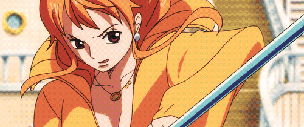
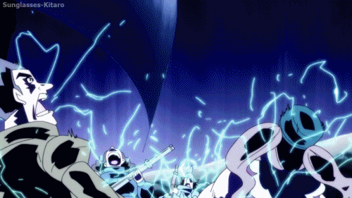
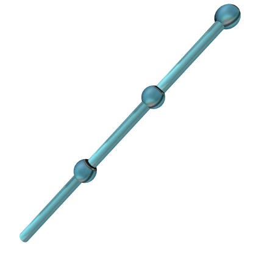

[ Fighting Style ]
Electro
Novice:
▰▱▱▱▱
Apprentice:
▰▰▱▱▱
Intermediate:
▰▰▰▱▱
Advanced:
▰▰▰▰▱
Master:
▰▰▰▰▰
Sulong
Novice:
▰▱▱▱▱
Apprentice:
▰▰▱▱▱
Intermediate:
▰▰▰▱▱
Advanced:
▰▰▰▰▱
Master:
▰▰▰▰▰
Weathermancy
Novice: The user has acquired the knowledge of Weather Arts, there is still a long way for them to go for complete mastery.
▰▱▱▱▱
- The user is a novice, starting off with Art Of Weather, this allows them to Judge Weather much better. Allowing them to avoid storms and weathers.
- All techniques scale to D-Rank (1.5x)
Apprentice: You now understand some of the underlying principles, but you still lack practical application or real mastery. You’re growing, but there's much to learn.
▰▰▱▱▱
- Can wield the Climatact with efficiency, Requires Tier 1 Inventor
- All techniques scale to C-Rank (2x)
- -1 Cooldown on all Weather techniques
Intermediate: You have a solid grasp of the techniques, and your skills have significantly improved. You're starting to unlock deeper levels of the your ability.
▰▰▰▱▱
- Can wield the Perfect Climatact with efficiency, Requires Tier 2 Inventor
- All techniques scale to B-Rank (3x)
Advanced: You are beginning to reach the peak of your power. You can utilize your techniques with efficiency, and your combat strategies are more advanced.
▰▰▰▰▱
- Can wield the Sorcery Climatact with efficiency, Requires Tier 3 Inventor
- All techniques scale to A-Rank (4x)
- -2 Cooldown on all Sword Based techniques
Master: You’ve reached the pinnacle of your craft. You can perform every technique at its most refined form and are capable of using them in nearly any situation with great ease.
▰▰▰▰▰
- Can wield the Sentient Climatact, this climatact can have immense strength as well as a will of its own.
- Requires a Homie Race Being to turn the Sapience of your Climatact
- All techniques scale to S-Rank (5x)
[ Techniques ]
|
 |
GALVANIC GYRE |
| [ ガルバニック・ジャイア, GARUBANIKKU JAIA ] | |
| ⚓ (Defensive) ⚓ | |
|
Utilizing the copper Climatact as a high-speed rotor, Rolina spins the staff to create a localized electromagnetic field fueled by her Electro. By catching an incoming weapon or projectile within this ionized "pocket," she can fluidly redirect the momentum of physical attacks. The copper material acts as a grounding path, allowing her to parry strikes with minimal impact to her own frame.
|
|
|
▰▱▱▱▱▱▱ [F]
|
|
|
[1x Doriki]
|
|
|
[Redirect's the opponet's physical attacks.]
|
|
|
 |
Static Nimbus |
| [ 静的な雨雲, Seiteki na amagumo ] | |
| ⚓ (Offensive) ⚓ | |
|
A combination of natural Rabbit Mink Electro and Weatheria science. By channeling her Electro into a controlled low-pressure pocket, Rolina manifests a highly charged lightning cloud. This cloud emits targeted discharge bolts that track the ionized particles of a target, conducted with lethal precision through her copper Climatact.
|
|
|
▰▰▱▱▱▱▱ [D]
|
|
|
[1.5x Doriki]
|
|
|
[Paralyzes the enemy]
|
|
| PETRICHOR CYCLONE | |
| [ ペトリコール・サイクロン, PETORIKŌRU SAIKURON ] | |
| ⚓ (Offensive/Crowd Control) ⚓ | |
|
By manipulating the thermal bars within her copper Climatact, Rolina generates a localized high-pressure system that manifests as a swirling vortex of wind and heavy rain. The wind serves to "corral" opponents into the center of the storm, while the rapid downpour saturates their armor and skin. This turns the entire area into a massive conductor, allowing Rolina to discharge her Electro through the raindrops to strike every target within the gale simultaneously.
|
|
|
▰▰▰▱▱▱▱ [C]
|
|
|
[2.5x Doriki]
|
|
|
[DAMAGES AND STUNS ALL TARGETS IN RANGE]
|
[ Inventory ]
Weapon
|
 |
Weatheria Training Rod/Copper-Climatact |
| [ ウェザリアの訓練棒 ] | |
| ⚓ (Grade: Meito) ⚓ | |
| A highly conductive Bo-staff crafted from copper. It is designed to withstand the high-voltage discharge of a Mink's Electro while remaining light enough for rapid, high-altitude maneuvers. | |
|
▰▰▱▱▱▱▱ [D]
|
|
|
[1.25x Doriki]
|
|
|
[Highly Conductive]
|
Inventions

|
N/A |
| [ N/A ] | |
| ⚓ (N/A) ⚓ | |
| N/A | |
|
[N/A]
|
|
|
[N/A]
|
Items

|
N/A |
| [ N/A ] | |
| ⚓ (N/A) ⚓ | |
| N/A | |
|
[N/A]
|
|
|
[N/A]
|
[ Statistics ]
Limits
- Mink
- Demon of Mokomo
- +1.5x Electro power
- +Up to two additional Animal Characteristics/Abilities
- +Electro Overload: Their Electro power erupts uncontrollably in battle, striking with a force and speed beyond normal Minks, leaving enemies paralyzed with fear and pain.
- +Primal Dominance: Heightened senses, reflexes, and predatory instincts make them apex combatants, able to anticipate and counter even the most skilled foes.
- +Feral Resilience: Even grievous injuries rarely slow them down; their determination and survival instinct allow them to fight beyond ordinary limits.
- -Bloodlust: Their uncontrollable ferocity can lead to reckless aggression, putting allies and objectives at risk if left unchecked.
- -Isolation: The fear they inspire often alienates them from their tribe, leaving them to walk a lonely path of power and infamy.
Tribal Perks (Mink)
- ±Electro abilities
- +Sulong Transformation that doubles power under a Full-Moon)
- +Animal Passive Rabbit's Speed and Jumping power.
Statistics
Strength: 0
Durability: 0
Agility: 0
Perception: 0
Stamina: 10
Doriki: 750
[ Talents ]
Electro: I
Sulong: I
Weathermancy: II
Snow Snow Fruit: 20% Desire, 0% Mastery
Chronicler: V
[ Haki ]
Observasion: 0
Armament: 0
Conqueror's 0
 [Redacted]
[Redacted]